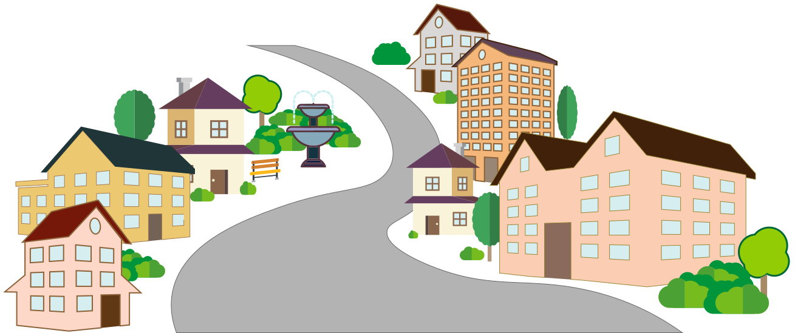
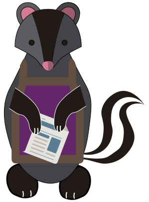
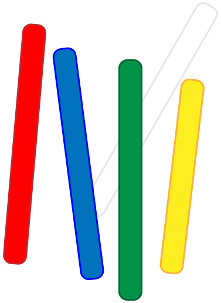
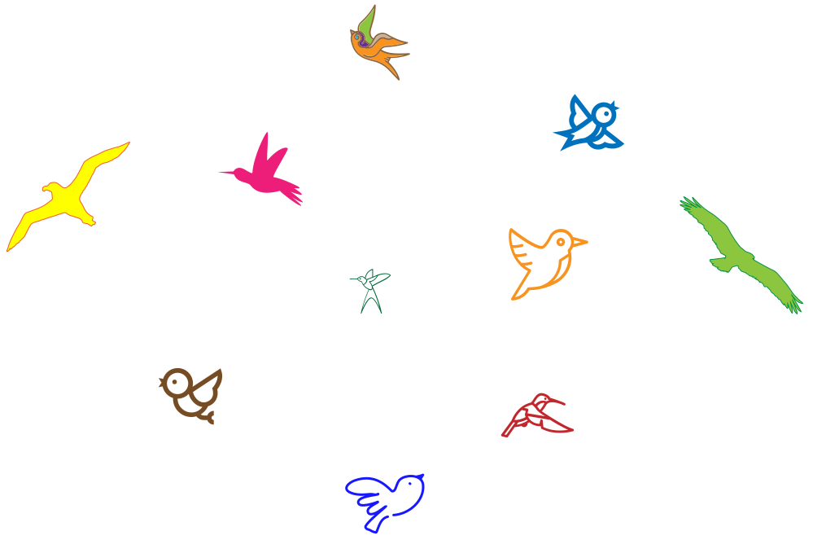

Eng
Eng
Камінчик та Промінчик
Старенька звивиста дорога, котра з обох боків вже давно позаростала віковими деревами, вела двох найкращих друзів. Це були видренята, на ім’я Камінчик і Промінчик. Привітне вранішнє сонечко пробивалось крізь густе листя, підсвічувало, мов розсипані діаманти, краплинки роси на зелених листочках квітневої трави. Світанок передбачав початок нового дня, як ніби початок нового життя. Так любо було глянути на тваринок, котрі раділи першим промінчикам та бадьоро вели дружню розмову.
Шлях їх вів до прекрасного міста, в котрому колись бував Камінчик. Він часто згадував це невеличке, навіть, містечко звичайних звірів, які щоденно займались буденними справами, розбудовуючи та покращуючи будинки і вулички. Провулки витонченою стрічкою звивались, підкреслюючи стрункість будівель. Яскравими плямами цю симетрію розбавляли довгі ліани плющу та винограду. Натомість парки та сквери відрізнялись виваженими формами та рівно підстриженими рослинами. Все це часто-густо огортав п’янкучий аромат вранішньої кави чи щойно спечених пиріжків із вишнею, яблуками, смородиною. При цих спогадах видреня ніби огортали в теплу, зв’язану бабусею, хустину та давали в руки чашку гарячого какао після прогулянки босими ногами по вранішній росі.
Проте підходячи ближче до міста звіренята не повірили своїм очам. Колись світле та привітне місто було важко впізнати.
Сонячні промінчики загородили важкі свинцеві хмари. Вулички огортав густий туман, ніби дим від шаленої пожежі. І не давала йому розвіятись ніби величезна мильна бульбашка, яка щільно накрила, як металевим саркофагом всі райони. Складно тепер було розгледіти продумані парки, розбудовані проспекти та зелені сквери. Потускнів аромат кав’ярень та пекарень, померкли яскраві вивіски магазинчиків, безрадісно плескався міський фонтан. Впертий Камінчик все хотів угледіти колись яскраві кольори, та навіть слів не було описати таку разючу зміну.
Тоді цілеспрямований Промінчик вирішив дізнатися, що сталося. Він впевнено попрямував звивистим тротуаром прямо до центральної площі. Там вже було не складно знайти заклопотаних звірів, що понуро занурились в буденні справи. Вони швиденько підійшли до насупленого борсука, що продавав газети.
- Доброго ранку! - взяв слово Промінчик.
У відповідь старий борсук кивнув головою і продовжив розкладати цілі стопки чорно-білого паперу. Видреня продовжував розмову. Цього разу обізвався Камінчик:
- Добродію. Я бував у Вашому місті та пам’ятаю його зовсім іншим. Чи не розкажете Ви що сталося? Що спіткало таке лихо його жителів?
Продавець зовсім не здивований подібним запитанням важко та втомлено почав свою розповідь:
- Місто як місто було. А потім одного дня здійнявся страшенний вітер, загуділо все і тварини полякалися. Відразу за гуркотом прилетів здоровенний і страшний чорний птах. Своїми міцними кігтями почав роздирати дахи та покрівлі будинків. Дзьобом виламував вікна та валяв дерева. Такої випалюючої злості в очах птаха ми ще не бачили. І все так миттєво. Ніби стрілою хто проткнув картину талановитого майстра і велика дірка залишилась посеред яскравого малюнку.
Видренята були вражені такою розповіддю. Та переглянувшись Камінчик войовничо спитав:
- То де він зараз? Треба здолати негайно!
- Вже пізно за ним ганятися. Дуже швидко пернатий перетворився на чорні згустки та упав на землю. Вони міцно присмокталися жилавими спрутами до потилиці тваринок, висмоктуючи всі іскри із очей. Ніхто й зробити нічого не зміг, з такою напастю й живемо.
Озирнулися друзі навкруги і придивилися про перехожих. І справді кожен з них носив на потилиці спрута, котрий міцно впився і стискав голови. Шкода стало жителів та колись квітучого міста. Та що робити?
Вони подякували продавцю та пішли до найближчої лавочки. Треба було обдумати таку лякаючу розповідь. Видренята сиділи та радились, дуже хотілось повернути посмішки, розвіяти тягучий туман та пустити весняні промінчики до вуличок міста.
- Треба повернути барви, - промовив Промінчик..
- Цього мало, - відповів Камінчик.
- Так. Тут потрібні масштабні і рішучі дії. Своє чаклунство будемо творити. Ходімо, є в мене задум!
Промінчик рішуче підвівся та весь у своєму запалі попрямував через увесь сквер. Камінчик миттю вирушив за ним. Недовго блукаючи вуличками вони натрапили на невеличкий канцелярський магазинчик. В ньому скупили всю різнокольорову крейду та поскладали в своєму рюкзаці.
План дій вже було ухвалено, залишилось лишень втілити задум у життя. Вони попрямували до найбільшої площі старовинного міста. Дістали нові покупки та стали малювати своїх птахів. Перехожі здивовано і незрозуміло озиралися, не розуміли намірів мандрівників, проте не заважали їм.
Камінчик і Промінчик змішували і чергували кольори. Вони сміливо експериментували із формами, розмірами та барвами. Птахи виходили то великими, то маленькими. Нагадували вже знайомих їм видів пташок – голубів, синичок чи лелек, то виглядали чудернацький вигаданими звірами, що лише мали крила та дзьоба. Одні мали величавий вигляд, другі кумедний. Видренята сміливо фантазували та проявляли творчість. Як у них виходило, так вони і малювали. І дуже скоро майже увесь асфальт буяв яскравими кольорами. Тоді друзі наполегливою вірою дунули та здійняли всіх пташок у небо. Це виглядало на справжнє диво. Дух перехоплювало від такого дійства.
Полетіли різнокольорові крила по проспектах та провулках. Чарівні створіння стали дбайливо та безпечно огортати містян, а сильним дзьобом клювати чорних спрутів. Допоки ті не відпадали і не розсипалися попелом.
Довго прийшлося маленьким видренятам малювати і чаклувати. А різнобарвним крилам працювати, щоб повернути всі іскри в очі. Потроху почали повертатися посмішки, а туман розвіюватися. Помітили друзі, що спрацьовує їх задум та ще завзятіше виводили прекрасні лінії різнобарвною крейдою, утворюючи живих створінь.
Звірі почали немов прокидатися. Теплі сонячні промінчики проходили крізь залишки туману та відблискували від усміхнених очей містян. Ніби свято настало. Стали вони відбудовувати будинки та створювати нові, ще гарніші та кращі. Згодом і мильна бульбашка луснула.
Аж ось озирнулись видренята. Добру справу зробили. Аж самим на душі добре. Вже вечоріло. Вперше за довгий час можна було побачити зорі. Такі яскраві, розсипані недбалою рукою вони лише підкреслювали велич місяця. Тихо та спокійно навкруги. Але точно відомо – завтра настане наступний привітний день і сонце зійде над славним містом.
Ось тепер Камінчик зміг відчути ті самі спогади та подарувати такі ж саме враження Промінчику. Це і стало найкращою нагородою.
Харків. 29.02.2024